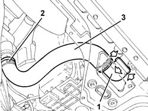
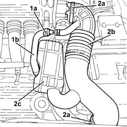
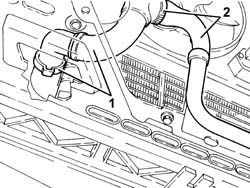
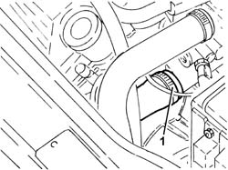
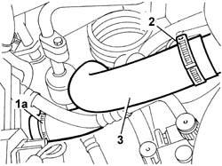
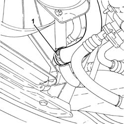
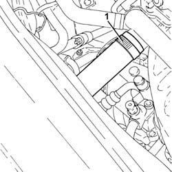

1088D10 lower sleeve for coolant outlet from radiator - r + r
- Path
- Procedures > 10 ENGINE > 1088 ENGINE COOLING > 1088D coolant hoses and sleeves > 1088D10 lower sleeve for coolant outlet from radiator - r + r
- Kind
- repair procedure (removal / refitting; the operation number is the code)
- Applies to
- all engines; all production periods
- Interactive page
- https://sloeber94.github.io/elrnDB-a147/en/#/3024909
Applies to: engines: 1.6 TS; all production periods
 Removing
Removing
 Refitting
RefittingPosition the vehicle on the ramp.
1. Disconnect the lower coolant outlet hose from the radiator and drain the engine coolant.
2. Disconnect the lower radiator coolant outlet hose from the water pump rigid inlet pipe.
3. Remove the lower coolant outlet hose from the radiator.

Applies to: engines: 1.6 TS; all production periods
Refitting
RemovingPlace the radiator lower coolant outlet hose back in its housing and connect it to the radiator and to the water pump rigid inlet pipe.
Refill the engine cooling system 0010T20 coolant change .
Remove the car from the ramp.
Applies to: engines: 2.0 TS; all production periods
Removing
RefittingPosition the vehicle on the ramp.
Proceed with the removal 7055B54 under-engine guard - r r .
1. Disconnect the lower coolant outlet hose from the radiator and drain the engine coolant.
2. Disconnect the lower radiator coolant outlet hose from the water pump rigid inlet pipe.
3. Remove the lower coolant outlet hose from the radiator.

Applies to: engines: 2.0 TS; all production periods
Refitting
RemovingPlace the lower radiator coolant outlet hose back in its housing and connect it to the radiator and to the water pump rigid inlet pipe.
Proceed with the refitting 7055B54 under-engine guard - r r .
Refill the engine cooling system 0010T20 coolant change .
Remove the car from the ramp.
Applies to: engines: 3.2 V6; all production periods
Removing
RefittingPosition the vehicle on the ramp.
Proceed with removal 7055B54 under-engine guard - r r .
1. Loosen the band (1a) and disconnect the oil vapour recirculation pipe (1b) from the corrugated hose.
2. Loosen the bands (2a) and remove the corrugated hose (2b), complete with resonator (2c).

Applies to: engines: 3.2 V6; all production periods
1. Press the two rapid attachment clips, by hand, and disconnect the lower coolant outlet hose from the radiator, radiator side.
2. Loosen the band and disconnect the engine cooling system hose from the radiator lower coolant outlet hose.

Applies to: engines: 3.2 V6; all production periods
1. Loosen the band, disconnect the radiator lower coolant outlet hose, thermostat side and remove it.

Applies to: engines: 3.2 V6; all production periods
Refitting
RemovingPlace the radiator lower coolant outlet hose in its housing, connect it to the thermostat and tighten the band.
Connect the engine cooling system hose to the radiator lower coolant outlet hose and tighten the band.
Connect the rapid attachment for the lower coolant outlet hose from the radiator, radiator side.
Place the corrugated hose, complete with resonator, back in its housing and tighten the bands.
Connect the oil vapour recirculation pipe to the corrugated hose and tighten the band.
Refill the engine cooling system with coolant 0010T20 coolant change .
Proceed with refitting 7055B54 under-engine guard - r r .
Remove the car from the ramps.
Applies to: engines: 1.9 JTD 8V; all production periods
Removing
Refitting7055B54 under-engine guard - r r
Position a suitable container to collect the coolant.
Raise the lift.
1. Disconnect the lower radiator hose.
Lower the lift.
1016A10 sound-proofing cover - r + r
2. Disconnect the lower pipe from the pump rigid inlet pipe.
3. Remove the lower radiator hose.

Applies to: engines: 1.9 JTD 8V; all production periods
Refitting
RemovingFit the lower radiator hose.
Connect the lower pipe to the pump rigid inlet pipe.
1016A10 sound-proofing cover - r + r
Raise the lift.
Connect the lower hose to the radiator.
Lower the lift.
Applies to: engines: 1.9 JTD 16V; all production periods
Removing
RefittingPosition the vehicle on the ramp.
Proceed with removal 7025A12 Engine front sound insulation COVER - R.R. .
Proceed with removal 7025A14 Bonnet LID - R.R. .
Proceed with removal 1016A10 sound-proofing cover - r + r .
Proceed with removal 7055B54 under-engine guard - r r .
1. Loosen the band and disconnect the lower radiator coolant outlet hose from the radiator, radiator side.

Applies to: engines: 1.9 JTD 16V; all production periods
Proceed with removal 1016A10 sound-proofing cover - r + r .
1. Loosen the band, disconnect the lower radiator coolant outlet hose from the water pump rigid inlet pipe and remove it.

Applies to: engines: 1.9 JTD 16V; all production periods
Refitting
RemovingPlace the lower radiator coolant outlet hose back in its housing and connect it and fasten it using the bands.
Refill the engine cooling system with coolant 0010T20 coolant change .
Proceed with refitting 7055B54 under-engine guard - r r .
Proceed with refitting 1016A10 sound-proofing cover - r + r .
Proceed with refitting 7025A14 Bonnet LID - R.R. .
Proceed with refitting 7025A12 Engine front sound insulation COVER - R.R. .
Remove the car from the ramps.